Fifteen runs across three tools: Claude Code, Codex and Antigravity. All received the same brief, word for word: design the Medellín Metro CAF train and the city skyline using the docs/ai/train.md and docs/ai/skyline.md guides and the same two images. Each worked in its own folder from the same commit, free to validate and render as many times as it wanted. Ten ran on Nov 3; five newer models ran on Nov 19 (round two).
GPT-6-Astra, GPT-6.2-Astra and GPT-6.1-Sol · Codex
Most complete
A train with all four CAF features and a recognizable skyline with its landmarks drawn one by one. Astra 6 did it in 4 min 48 s with 10.6k output tokens; Astra 6.2, in 5 min 34 s with 8.8k.
GPT-6.1-Terra · Codex
Most efficient
A 4/4 train in 2 min 13 s, with 3.6k output tokens and only 475 reasoning tokens, even at xhigh. Its skyline was incomplete.
Sonnet 5.5 · two tools
The tool matters
With the same prompt, Sonnet scored 4/4 in Claude Code and 1/4 in Antigravity, where it finished in a minute and a half with one render.
Haiku 5.5 · Claude Code
Most tokens used
81.8k output tokens, 70,000 for reasoning, for a train with no green, a flat front and no overhead wire.
The fifteen runs
Train: how many of the four Medellín CAF features it has (yellow stripe, green stripe, black face with a white cheek, overhead wire). Skyline: how recognizable the reference image is.
Model
Time
Output
Reasoning
Input
Valid. / renders
Train
Skyline
Claude Code
Opus 5.5xhigh
7 min 24 s
41,495
24,442
3.54 M
5 (1 with error) / 5
3/4no yellow
recognizable
Sonnet 5.5xhigh
4 min 23 s
31,168
19,534
2.30 M
2 / 4
4/4
incomplete
Haiku 5.5xhigh
6 min 42 s
81,831
70,333
3.28 M
2 / 3
1/4no green, front unlike the CAF, no overhead wire
generic
Codex
GPT-6.1-Solxhigh
6 min 07 s
14,187
6,847
760k
2 / 3
4/4
recognizable
GPT-6.1-Terraxhigh
2 min 13 s
3,609
475
511k
3 / 2
4/4
incomplete
GPT-6-Lunaxhigh
7 min 57 s
22,090
17,746
726k
5 / 1
2/4no green, front unlike the CAF
incomplete
GPT-6-Astraxhigh
4 min 48 s
10,576
3,221
605k
2 / 4
4/4
recognizable
GPT-6.2-Solxhigh
5 min 08 s
10,273
3,908
723k
3 / 3
3/4no yellow
recognizable
GPT-6.2-Astraxhigh
5 min 34 s
8,790
3,432
882k
2 / 4
4/4
recognizable
Antigravity
Gemini 4 Argonhigh
14 min 17 s
66,630
54,162
1.44 M
2 / 2
3/4no yellow
recognizable
Gemini 3.8 Flashhigh
12 min 00 s
45,262
34,964
3.92 M
3 / 5
3/4no yellow
generic
Sonnet 5.5high
1 min 23 s
7,948
not reported
252k
3 / 1
1/4no green, front unlike the CAF, no overhead wire
generic
Gemini 4 Hydrogenxhigh
8 min 49 s
74,465
53,385
171k
5 / 5
3/4no yellow
incomplete
Gemini 4 Neonxhigh
11 min 53 s
64,411
48,765
162k
4 / 4
3/4no yellow
incomplete
Opus 5.5high · attempt 1
21 min 55 s
stopped by hand after it stalled (see round two); no usage reported
no files delivered
no result
Opus 5.5high · attempt 2
7 min 14 s
32,612
not reported
105k
4 (1 with error) / 8
3/4no yellow
incomplete
Round two: five newer models
On Nov 19 the same brief, word for word, went to five newer models: GPT-6.2-Astra and GPT-6.2-Sol in Codex at xhigh, Gemini 4 Hydrogen and Gemini 4 Neon in Antigravity at xhigh, and Opus 5.5 in Antigravity at high, its maximum there. Each ran in its own git worktree cut from commit 8caadee, the one just before the Medellín example was added to the repository, so none could see an existing answer. Gemini 4 Argon was not run again.
Antigravity ran with the same sandbox as before plus a command allowlist (node, read-only git and plain file reads, one command per call). Opus 5.5 needed two attempts. In the first, node failed inside the sandbox; the model asked to run it outside, was denied, and never took another step. After 21 min 55 s with nothing delivered but an empty train file, the process was stopped by hand. The table counts the second attempt, which ran with identical settings and finished in 7 min 14 s.
Tokens before delivery
Tokens generated by each model before delivery. Reasoning is what it thought between steps; visible output is the code, JSON and text it wrote. Antigravity did not report reasoning for Sonnet or Opus, so their bars are entirely visible output.
ReasoningVisible output
Same model, different tool
Sonnet 5.5 ran twice with the same prompt: in Claude Code at xhigh effort and in Antigravity at high, the maximum available there. In Claude Code it iterated, viewed the full scene and delivered a train with all four features. In Antigravity it finished in a minute and a half, rendered once and delivered a train with no green or overhead wire. Effort may account for some of the difference, but its way of working changed completely.
Claude Code · xhigh
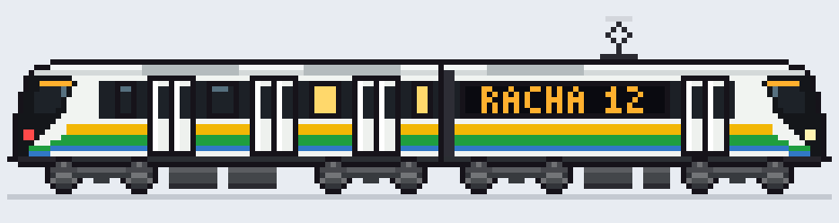
Time
4 min 23 s
Output
31,168
Renders
4
Train
4/4
Antigravity · high
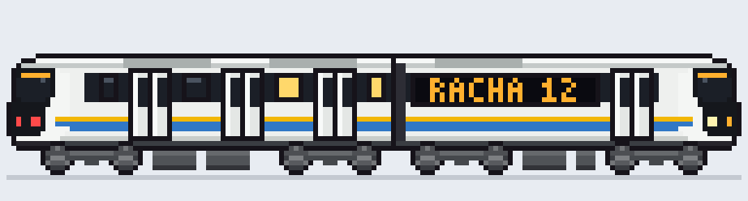
Time
1 min 23 s
Output
7,948
Renders
1
Train
1/4
Opus 5.5 also ran in both tools and scored 3/4 in each, with no yellow, so the gap is not universal. Only its skyline changed: recognizable in Claude Code, incomplete in Antigravity, where five of nine pieces were drawn.
Claude Code · xhigh
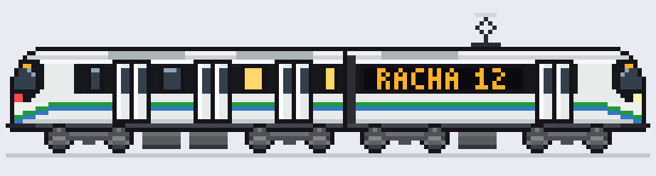
Time
7 min 24 s
Output
41,495
Renders
5
Train
3/4
Antigravity · high
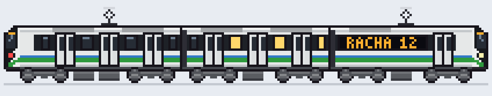
Time
7 min 14 s
Output
32,612
Renders
8
Train
3/4
What each run delivered
All were rendered afterward with the same sample data: 1,200 contributions, a 12-day streak, TypeScript (blue stripe). The scene follows your screen's light or dark theme.
Claude Code
Opus 5.5
xhigh · 7 min 24 s · 41.5k output · train 3/4 · skyline recognizable
Train. Green and language stripes curve down the nose, with a slanted black face and pantograph. No yellow.
Skyline. Landmarks drawn pixel by pixel: a two-tower basilica with crosses, a clock palace, Coltejer with its spire; mountain ranges were added in the background.
Process. The most corrections among the Claude runs: 5 validations (one failed and was fixed) and 5 renders, with the full scene in both themes.
xhigh · 6 min 07 s · 14.2k output · train 4/4 · skyline recognizable
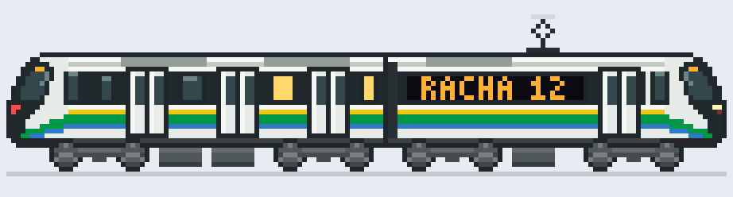
Train. Yellow, green and language stripes curve toward a slanted black face with a headlight on the cheek; pantograph. It used the "dark body" color for green.
Skyline. Six drawn silhouettes: a cathedral with two bell towers, an arched building, a palace with a turret, Coltejer, a clock church. No filler, so gaps remain.
Process. It wrote its own design and review scripts inside comparativa/: 2 validations and 3 renders.
xhigh · 4 min 48 s · 10.6k output · train 4/4 · skyline recognizable
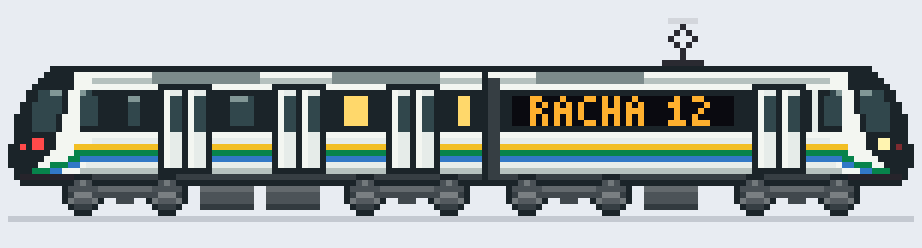
Train. Yellow, green and language stripes, with a slanted black face and a green diagonal on the cheek; pantograph. It used the palette's "very dark" color for green.
Skyline. All eight silhouettes drawn in the image's order: two-bell-tower church, pedimented facade, building with central tower, palace with a pavilion, Coltejer as the tallest, and a Gothic Revival church. No filler.
Process. Four and a half minutes, 2 validations and 4 renders; it wrote its own script to generate the skyline.
xhigh · 5 min 08 s · 10.3k output · train 3/4 · skyline recognizable
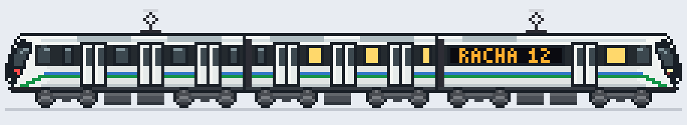
Train. Green and language stripes, no yellow; slanted black face with a white frame and low headlights; pantograph.
Skyline. Eight pieces, seven drawn: a two-tower cathedral, a curved-top building, a three-pinnacle facade, a two-volume tower, a domed palace, Coltejer and a spire church with a rose window. The last tower is a flat block. No filler.
Process. Three validations and three renders, with five images viewed. Fewer output tokens than GPT-6.1-Sol (14.2k).
xhigh · 5 min 34 s · 8.8k output · train 4/4 · skyline recognizable
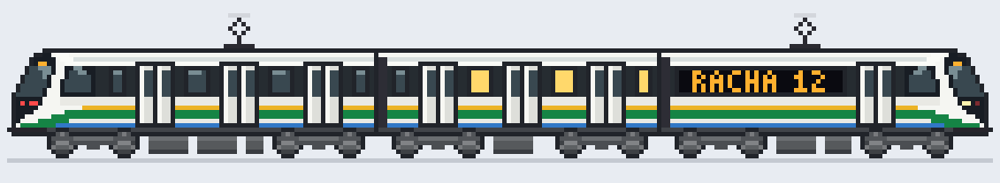
Train. Yellow, green and language stripes. The yellow stops behind the cab and the green runs down the white cheek to the bumper; slanted black windshield; pantograph.
Skyline. All eight silhouettes drawn in the image's order: a twin-tower cathedral, a pilastered facade, a palace with side domes, a flat-top tower, an arcaded palace with a pavilion, Coltejer with its needle, a Gothic Revival church and a grid-window tower. No filler.
Process. Each JSON validated twice and four scenes rendered, six images viewed. The same result as GPT-6-Astra with 17% fewer output tokens, in 46 more seconds.
high · 14 min 17 s · 66.6k output · train 3/4 · skyline recognizable
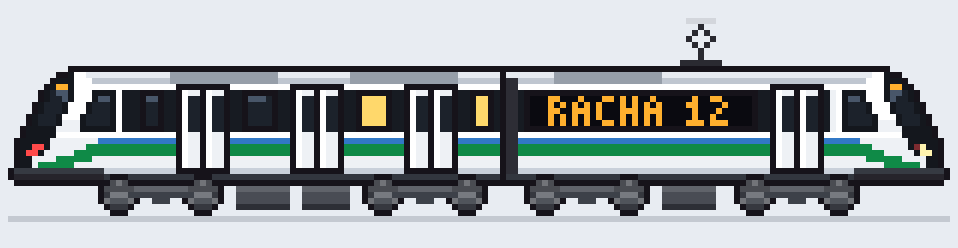
Train. Green and language stripes, no yellow; the most elaborate nose in the test: 19 columns, slanted white pillar, trapezoidal window and green diagonal.
Skyline. Eight named landmarks, seven drawn: Catedral Metropolitana, Edificio Vásquez, Veracruz, Torre del Café, Palacio de la Cultura, Coltejer, Jesús Nazareno.
Process. The slowest: 14 min and 54,000 reasoning tokens for 2 validations and 2 renders.
high · 12 min 00 s · 45.3k output · train 3/4 · skyline generic
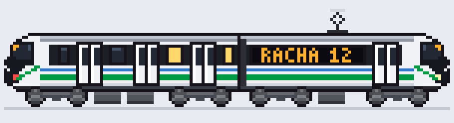
Train. Double green and language stripes, no yellow; green diagonal on the nose; pantograph.
Skyline. Ten pieces with real names (Carré, Torre del Café, Museo de Antioquia, cerro Pan de Azúcar), but only the cathedral is drawn; the rest are blocks.
Process. Twelve minutes, 5 renders and the largest input processed of all: 3.9 million tokens.
xhigh · 8 min 49 s · 74.5k output · train 3/4 · skyline incomplete
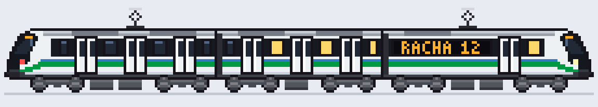
Train. Green and language stripes, no yellow; slanted nose with a black mask, a diagonal white pillar and a side cab window; pantograph.
Skyline. Nine named pieces (Catedral Metropolitana, Carré, Veracruz, a twin tower, Palacio de la Cultura, Coltejer, Sagrado Corazón, an office tower), six drawn and three left as blocks, with the generic filler on.
Process. 5 validations and 5 render batches, with 11 image reads. 53,000 of its 74,500 output tokens went to reasoning.
xhigh · 11 min 53 s · 64.4k output · train 3/4 · skyline incomplete
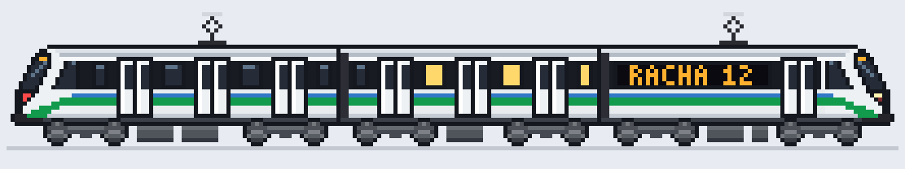
Train. Double green band that curves down the nose, with a language stripe above; black mask and pantograph. No yellow.
Skyline. Nine pieces, six drawn (the cathedral, a historic building, a colonial basilica, Palacio de la Cultura, Coltejer and a Neo-Gothic church). The "Torre del Café" and a modern tower are blocks; filler is on.
Process. The slowest of round two: 4 validations and 4 renders, and 48,800 reasoning tokens.
high · 7 min 14 s · 32.6k output · train 3/4 · skyline incomplete
Train. Green and language stripes, with the language row where the photo has yellow; black face and pantograph. No yellow.
Skyline. Four hills plus nine pieces, five of them drawn (the cathedral, Palacio de la Cultura, a palace with a tower, Coltejer with its "eye" and a clock church); the rest are blocks, with filler on.
Process. Second attempt; the first stalled (see round two). 4 validations (the first failed because the hills were too wide and was fixed) and 8 renders. It did not look at the full scene. Antigravity did not report reasoning tokens.
Codex produced the most faithful trains with the least output. Four of its six models (GPT-6.1-Sol, GPT-6.1-Terra, GPT-6-Astra and GPT-6.2-Astra) have all four features, with between 3.6k and 14.2k output tokens; the other eleven runs spent between 7.9k and 81.8k.
More reasoning did not buy fidelity. Haiku (70,000 reasoning tokens), Gemini 4 Argon (54,000), Gemini 4 Hydrogen (53,000) and Gemini 4 Neon (49,000) delivered less faithful trains than GPT-6.1-Terra, which used 475 for reasoning.
Yellow and green together were the hardest test: only 5 of 15 included both (Sonnet in Claude Code, GPT-6.1-Sol, GPT-6.1-Terra, GPT-6-Astra and GPT-6.2-Astra). The rest kept one and gave the other row to the language stripe.
Six skylines were recognizable (Opus in Claude Code, GPT-6.1-Sol, GPT-6-Astra, GPT-6.2-Sol, GPT-6.2-Astra and Gemini 4 Argon). All of them drew landmarks one by one with rows; none of the runs relying on catalog shapes reached that point.
Round two: the two Gemini 4 models at xhigh used 64k and 74k output tokens, between six and eight times the 8.8k and 10.3k of the GPT-6.2 models, and neither added yellow.
The tool matters as much as the model: the same Sonnet went from 4/4 to 1/4 when switching from Claude Code to Antigravity. Opus 5.5 scored 3/4 in both, but its first Antigravity attempt stalled after a denied sandbox escape and delivered nothing.
This is one run per model, except Opus 5.5 in Antigravity, which needed two attempts: a sample, not an average. Style can change from one run to another.